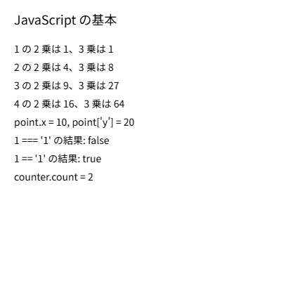

3. Python エンジニアのための JavaScript 速習
p5.js のスケッチは JavaScript で書きます。この章では、Python の知識を前提に、p5.js を書くのに必要な JavaScript の文法を説明します。
3.1. 文の書き方
JavaScript と Python の書き方の違いのうち、最初に戸惑いやすいのは次の 3 点です。
ブロックは波括弧で囲む：Python はインデントでブロックを表しますが、JavaScript は
{と}で囲みます。インデントは見やすさのためだけのもので、動作には影響しません。文の終わりにセミコロンを付ける：セミコロンを省略しても多くの場合は自動で補われますが、意図しない解釈を避けるため、本書では付けて書きます。
コメントは
//で始める：複数行のコメントは/*と*/で囲みます。
1// 1 行のコメント
2/*
3 複数行の
4 コメント
5*/
6if (x > 0) {
7 console.log('正の数です');
8}
3.2. 変数と定数
変数は let または const で宣言します。Python と違い、最初に使う前に宣言が必要です。
1let count = 0; // 再代入できる
2count = count + 1;
3
4const SPEED = 3; // 再代入できない
5// SPEED = 5; // これはエラーになる
再代入しない値には const、再代入する値には let を使います。古いコードでは var も使われていますが、有効範囲（スコープ）が分かりにくいため、新しく書くコードでは使いません。
let と const で宣言した変数は、宣言したブロックの中でだけ有効です。関数の外で宣言した変数は、どの関数からも使えるグローバル変数になります。p5.js では、setup() と draw() の両方で使う値を、関数の外で宣言したグローバル変数に入れるのが一般的です。
3.3. 値の型と演算
主な型と、Python との違いを次の表に示します。
種類 |
JavaScript の例 |
Python との違い |
|---|---|---|
数値 |
|
整数と浮動小数点数の区別がなく、すべて |
文字列 |
|
Python と同様に、単一引用符と二重引用符のどちらも使える。 |
テンプレートリテラル |
|
バッククォートで囲み、 |
真偽値 |
|
先頭が小文字。 |
値がないこと |
|
Python の |
べき乗は **、剰余は % で、Python と同じです。x += 1 のような複合代入演算子も使えます。さらに、1 を加える x++、1 を引く x-- もよく使います。
3.4. 比較と論理演算
等しいかどうかの比較には、== ではなく === を使います。== は比較の前に型を変換するため、1 == '1' が true になるなど、意図しない結果になることがあります。=== は型も含めて比較します。等しくないことの判定には !== を使います。
論理演算子は、Python の and、or、not の代わりに記号を使います。
Python |
JavaScript |
意味 |
|---|---|---|
|
|
等しい |
|
|
等しくない |
|
|
かつ |
|
|
または |
|
|
否定 |
3.5. 条件分岐とループ
if 文の条件は丸括弧で囲みます。Python の elif は else if と書きます。
1if (score >= 80) {
2 grade = 'A';
3} else if (score >= 60) {
4 grade = 'B';
5} else {
6 grade = 'C';
7}
条件によって 2 つの値のどちらかを選ぶときは、条件演算子（三項演算子）が便利です。Python の a if 条件 else b に相当し、条件 ? a : b と書きます。
1const r = i % 2 === 0 ? 40 : 18; // i が偶数なら 40、奇数なら 18
for 文には 2 つの書き方があります。回数を指定して繰り返すときは C 言語と同じ形、配列の要素を順に取り出すときは for...of を使います。
1// Python の for i in range(10): に相当
2for (let i = 0; i < 10; i++) {
3 console.log(i);
4}
5
6// Python の for color in colors: に相当
7const colors = ['red', 'green', 'blue'];
8for (const color of colors) {
9 console.log(color);
10}
for...in という構文もありますが、これは配列の要素ではなくキー（添字）を取り出すため、配列には使いません。
3.6. 関数
関数は function キーワードで定義します。引数の既定値も指定できます。
1function area(width, height = 10) {
2 return width * height;
3}
4
5area(5); // 50
6area(5, 3); // 15
関数は アロー関数 で書くこともできます。Python の lambda に似ていますが、波括弧を使えば複数行の処理も書けます。
1const double = (x) => x * 2;
2
3const greet = (name) => {
4 const message = `こんにちは、${name} さん`;
5 return message;
6};
アロー関数は、関数を引数として渡すとき（コールバック関数）によく使います。
3.7. 配列とオブジェクト
配列は Python のリストに相当します。よく使う操作を次に示します。
1const numbers = [3, 1, 4];
2numbers.push(1); // 末尾に追加（append に相当）
3console.log(numbers.length); // 要素数（len() に相当）
4console.log(numbers[0]); // 先頭の要素
5const doubled = numbers.map((n) => n * 2); // 各要素を変換
6const large = numbers.filter((n) => n >= 3); // 条件に合う要素を抽出
7numbers.forEach((n, i) => console.log(i, n)); // 添字と要素を順に処理
Python と違い、numbers[-1] で末尾の要素は取り出せません。末尾の要素は numbers[numbers.length - 1] または numbers.at(-1) で取り出します。
オブジェクトは、Python の辞書に近いデータ構造です。キーは引用符なしで書けて、値は . または [] で取り出します。
1const ball = { x: 100, y: 200, color: 'red' };
2console.log(ball.x); // 100
3console.log(ball['color']); // 'red'
4ball.speed = 3; // 新しいキーを追加
const で宣言した配列やオブジェクトでも、中身は変更できます。const が禁止するのは変数への再代入だけです。
3.8. クラス
クラスの書き方は Python とよく似ています。主な違いは次のとおりです。
コンストラクターは
__init__ではなくconstructorという名前にする。selfの代わりにthisを使う。メソッドの引数にthisを書く必要はない。インスタンスは
newを付けて作る。
1class Counter {
2 constructor(start) {
3 this.count = start;
4 }
5
6 increment() {
7 this.count += 1;
8 }
9}
10
11const counter = new Counter(0);
12counter.increment();
13console.log(counter.count); // 1
3.9. Python との対応表
この章で説明した内容を次の表にまとめます。
Python |
JavaScript |
|---|---|
|
|
|
|
|
|
|
|
|
|
|
|
|
|
|
|
|
|
|
|
|
|
|
|
|
|
|
|
3.10. サンプル
この章の内容をまとめて試すサンプルです。結果はキャンバスと開発者ツールのコンソールの両方に表示されます。
1// JavaScript の基本文法を試すスケッチ
2// 結果はキャンバスと開発者ツールのコンソールの両方に表示する
3
4// const は再代入できない定数、let は再代入できる変数
5const TITLE = 'JavaScript の基本';
6const lines = [];
7
8// 関数宣言（Python の def に相当）
9// 名前を square にすると p5.js の square() と衝突してエラーになるため注意
10function squared(x) {
11 return x * x;
12}
13
14// アロー関数（Python の lambda に近いが、複数行の処理も書ける）
15const cubed = (x) => x * x * x;
16
17// クラス（Python の class に相当）
18class Counter {
19 // コンストラクター（Python の __init__ に相当）
20 constructor(start) {
21 this.count = start; // Python の self は JavaScript では this
22 }
23
24 increment() {
25 this.count += 1;
26 }
27}
28
29function setup() {
30 createCanvas(400, 400);
31 noLoop(); // 静止画なので draw() は 1 回だけ実行する
32
33 // 配列（Python のリストに相当）
34 const numbers = [1, 2, 3];
35 numbers.push(4); // Python の append に相当
36
37 // for...of で要素を順に取り出す（Python の for n in numbers に相当）
38 for (const n of numbers) {
39 // テンプレートリテラル（Python の f 文字列に相当）
40 lines.push(`${n} の 2 乗は ${squared(n)}、3 乗は ${cubed(n)}`);
41 }
42
43 // オブジェクト（Python の辞書に相当）
44 const point = { x: 10, y: 20 };
45 lines.push(`point.x = ${point.x}, point['y'] = ${point['y']}`);
46
47 // === は型も含めて比較し、== は型を変換してから比較する
48 lines.push(`1 === '1' の結果: ${1 === '1'}`);
49 lines.push(`1 == '1' の結果: ${1 == '1'}`);
50
51 // new でインスタンスを作る
52 const counter = new Counter(0);
53 counter.increment();
54 counter.increment();
55 lines.push(`counter.count = ${counter.count}`);
56
57 // 開発者ツールのコンソールに出力する（Python の print に相当）
58 for (const line of lines) {
59 console.log(line);
60 }
61}
62
63function draw() {
64 background(255);
65 fill(0);
66 textSize(18);
67 text(TITLE, 20, 35);
68
69 textSize(14);
70 // 要素と番号を同時に取り出す（Python の enumerate に相当）
71 lines.forEach((line, i) => {
72 text(line, 20, 75 + i * 26);
73 });
74}
ダウンロード：
index.html、sketch.js


図 3.1 サンプルの実行結果
10 行目の関数は、2 乗を計算するので本来は square と名付けたいところです。しかし、p5.js には正方形を描く square() 関数があり、同じ名前の関数を定義すると p5.js の初期化時にエラーになります。p5.js の関数や変数と同じ名前をグローバルに定義しないように注意してください。この問題は、スケッチの基本構造 で説明するインスタンスモードを使うと避けられます。